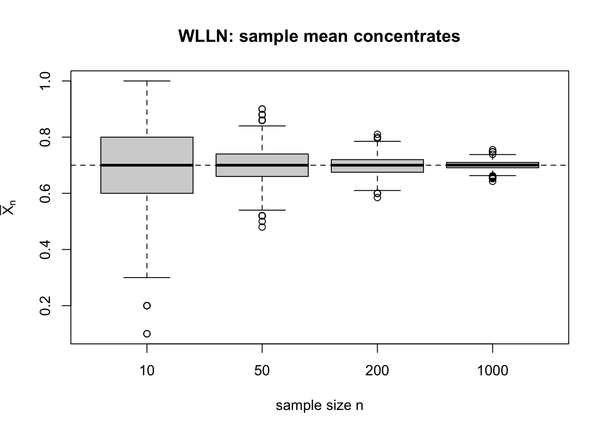
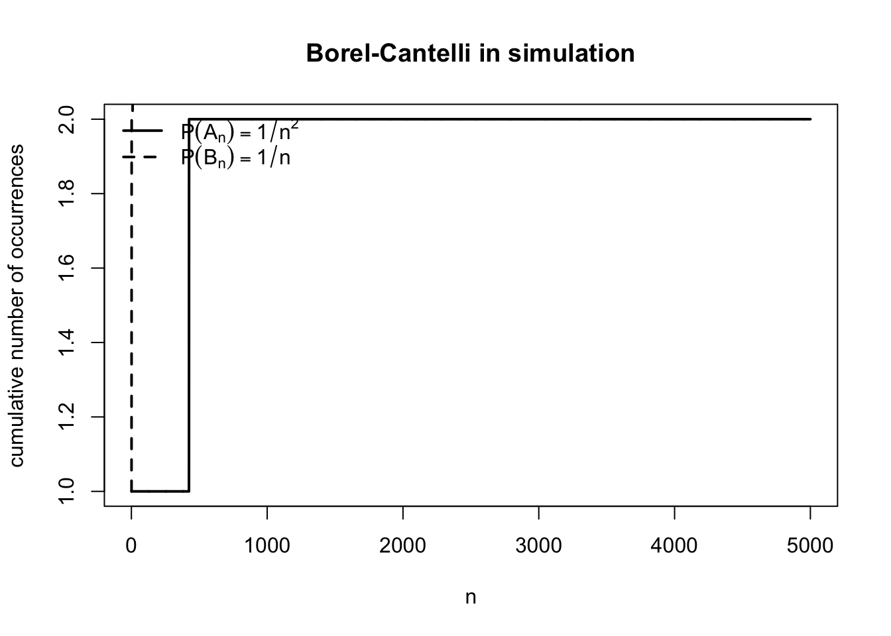
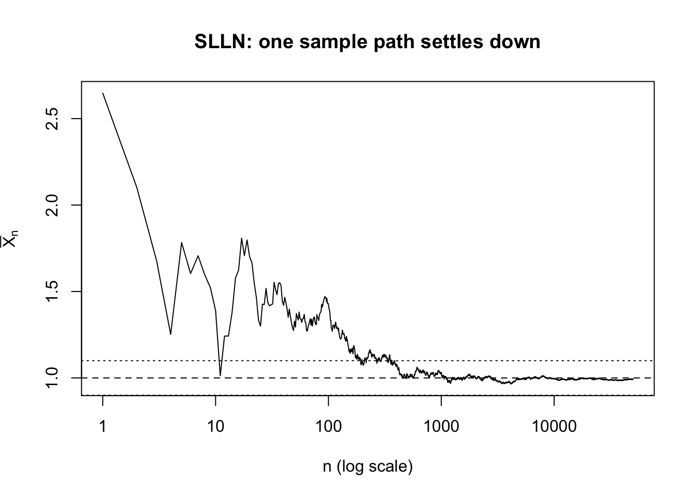
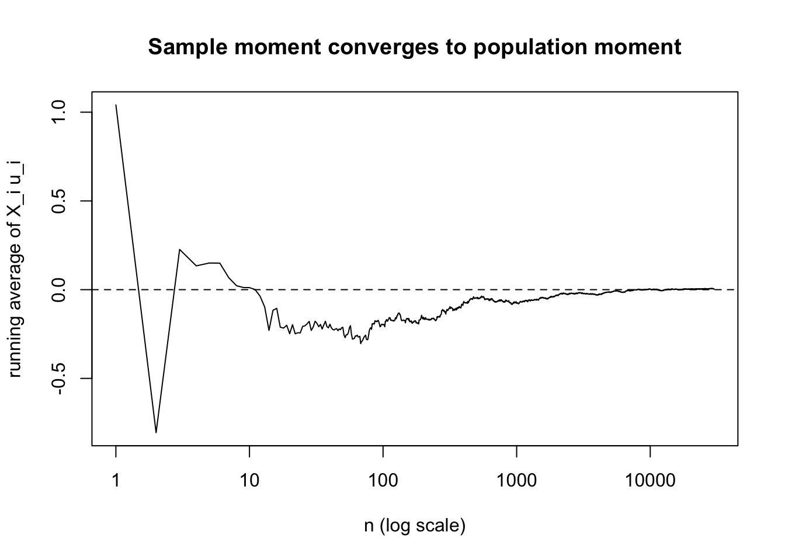

lecture5
確率論の基礎概念その4：大数の法則とボレル・カンテリ
今回は大数の法則を扱う。
計量経済学にとって，大数の法則はほとんど空気みたいな存在である。
推定量の consistency を示すときも，モーメント条件 \[
E[g(Z_i,\theta_0)] = 0
\] を標本平均 \[
\frac{1}{n}\sum_{i=1}^n g(Z_i,\theta_0)
\] で置き換えるときも，OLS で \[
\frac{1}{n}\sum_{i=1}^n X_i u_i \to 0
\] と言いたいときも，後ろで働いているのは大数の法則である。
ただし「標本平均は母平均に近づく」という日本語だけを聞いていると，何がどの意味で近づくのかが曖昧なまま終わってしまう。
実際には，
- 確率収束という意味で近づく弱大数の法則（WLLN）
- ほぼ確実収束という意味で近づく強大数の法則（SLLN）
の二段階がある。
さらに，SLLN を理解するには，
「悪いことが無限回起きる確率」を支配するボレル・カンテリの補題が決定的に重要になる。
今回の流れは次の通りである。
- まず WLLN を示して，「平均をとるとばらつきが減る」ことを確認する
- 次にボレル・カンテリを導入して，「悪い事象が無限回起きるかどうか」を考える
- その上でコルモゴロフの第一定理を示し，有限分散のもとでの SLLN を得る
- 最後に，これが計量経済学でどのように使われるかをシミュレーションで見る
セットアップと収束の意味
以下，確率変数列 \(X_1,X_2,\dots\) に対して
\[ S_n = \sum_{i=1}^n X_i,\qquad \bar X_n = \frac{1}{n}\sum_{i=1}^n X_i = \frac{S_n}{n} \]
と書く。
大数の法則は，この \(\bar X_n\) が何か極限に近づくという主張である。
確率収束とほぼ確実収束
まず用語を揃えておく。
定義（確率収束）
確率変数列 \(Y_n\) が確率変数 \(Y\) に確率収束するとは，任意の \(\varepsilon>0\) に対して
\[ P(|Y_n-Y|>\varepsilon)\to 0 \qquad (n\to\infty) \]
が成り立つことをいう。これを \[ Y_n \overset{p}{\to} Y \] と書く。
定義（ほぼ確実収束）
確率変数列 \(Y_n\) が \(Y\) にほぼ確実収束するとは，
\[ P\left( \omega\in\Omega:\ Y_n(\omega)\to Y(\omega)\right)=1 \]
が成り立つことをいう。これを \[ Y_n \to Y \quad a.s. \] と書く。
この二つの違いは，初学者にはかなり掴みにくい。
- 確率収束は，「大きな \(n\) では高い確率で近い」という主張
- ほぼ確実収束は，「ほとんどすべての標本経路で，ある時点以降ずっと近い」という主張
である。
したがって，ほぼ確実収束の方が強い。実際， \[ Y_n \to Y \quad a.s. \quad \Longrightarrow \quad Y_n \overset{p}{\to} Y \] が成り立つ。
大数の法則で言えば，
- WLLN は \(\bar X_n \overset{p}{\to}\mu\)
- SLLN は \(\bar X_n \to \mu \ a.s.\)
という違いである。
弱大数の法則（WLLN）
まずはいちばん基本的な WLLN から始める。
定理（弱大数の法則）
\(X_1,X_2,\dots\) を i.i.d. 実数値確率変数列とし， \[
E[X_1]=\mu,\qquad \mathrm{Var}(X_1)=\sigma^2<\infty
\] とする。このとき \[
\bar X_n \overset{p}{\to} \mu
\] が成り立つ。
証明
\(Y_i=X_i-\mu\) とおくと，\(E[Y_i]=0\)，\(\mathrm{Var}(Y_i)=\sigma^2\) であり，
\[ \bar X_n-\mu = \frac{1}{n}\sum_{i=1}^n Y_i \]
である。独立性より
\[ \mathrm{Var}\!\left(\frac{1}{n}\sum_{i=1}^n Y_i\right) = \frac{1}{n^2}\sum_{i=1}^n \mathrm{Var}(Y_i) = \frac{\sigma^2}{n}. \]
したがってチェビシェフの不等式より，任意の \(\varepsilon>0\) に対して
\[ P(|\bar X_n-\mu|>\varepsilon) \le \frac{\mathrm{Var}(\bar X_n)}{\varepsilon^2} = \frac{\sigma^2}{n\varepsilon^2} \to 0. \]
よって \(\bar X_n\overset{p}{\to}\mu\) が示された。\(\square\)
何が起きているのか
WLLN の本質はとても単純である。
独立な観測を平均すると，
- 平均値は変わらない
- 分散が \(1/n\) のオーダーで小さくなる
ので，標本平均はだんだん母平均のまわりに集中していく。
だから WLLN は「平均をとるとノイズが薄まる」という法則だと思えばよい。
ただし，ここで言っているのはあくまで確率的に近いという話である。
1本の標本経路を固定して「いずれ絶対に落ち着く」とまではまだ言っていない。
シミュレーション：WLLN は「分布が集中する」こと
WLLN は確率収束の定理なので，1本の経路だけを見るより，標本平均の分布が \(n\) とともに縮んでいく様子を見る方が本質に近い。
ここでは Bernoulli\((0.7)\) を 2000 回ずつ繰り返し発生させ，
\(n=10,50,200,1000\) のときの標本平均の分布を boxplot で描いてみる。
\(n\) が大きくなるほど箱が細くなり，\(\bar X_n\) が 0.7 の近くに集まっていく。
これがまさに WLLN の絵である。
WLLN だけでは SLLN にならない
ここで，強大数の法則に行きたくなる。
SLLN で言いたいのは，任意の \(\varepsilon>0\) に対して
\[ |\bar X_n-\mu|>\varepsilon \]
という「悪いこと」が有限回しか起きないということである。
言い換えると，十分大きな \(n\) 以降はずっと
\[ |\bar X_n-\mu|\le \varepsilon \]
になってほしい。
この「有限回しか起きない」を表すために，事象列 \(A_n\) に対して
\[ A_n \ \text{i.o.} \]
という記法を使う。これは infinitely often の略で，「\(A_n\) が無限回起きる」という意味である。
厳密には
\[ A_n \ \text{i.o.} = \bigcap_{m=1}^\infty \ \bigcup_{n\ge m} A_n \]
で定義される。
これは「どれだけ先に進んでも，その先でまた \(A_n\) が起きる」という意味になっている。
したがって，SLLN は実質的には \[ P\bigl(|\bar X_n-\mu|>\varepsilon \ \text{i.o.}\bigr)=0 \qquad (\forall \varepsilon>0) \] を示す問題である。
ここで自然に思いつくのは，WLLN の証明で使ったチェビシェフの評価
\[ P(|\bar X_n-\mu|>\varepsilon)\le \frac{\sigma^2}{n\varepsilon^2} \]
を足し合わせて，ボレル・カンテリを使う方法である。
しかし \[
\sum_{n=1}^\infty \frac{1}{n} = \infty
\] なので，このままでは第一ボレル・カンテリ補題を使えない。
ここが重要なポイントである。
WLLN は「各 \(n\) で外れる確率が小さい」ことを言っている。
SLLN は「外れることが無限回起きない」ことを言っている。
前者から後者へ進むには，無限回の振る舞いを直接支配する補題が必要になる。
それがボレル・カンテリである。
ボレル・カンテリの補題
第一ボレル・カンテリ補題
補題（第一ボレル・カンテリ）
事象列 \(A_1,A_2,\dots\) が \[
\sum_{n=1}^\infty P(A_n)<\infty
\] を満たすならば， \[
P(A_n\ \text{i.o.})=0
\] が成り立つ。
証明
\[
B_m=\bigcup_{n\ge m} A_n
\] とおくと，\(B_m\downarrow\) であり， \[
A_n\ \text{i.o.}=\bigcap_{m=1}^\infty B_m
\] である。
したがって確率の上からの連続性より \[ P(A_n\ \text{i.o.}) = \lim_{m\to\infty} P(B_m). \]
一方，和事象の確率の劣加法性より \[ P(B_m) = P\left(\bigcup_{n\ge m}A_n\right) \le \sum_{n\ge m}P(A_n). \]
右辺は仮定より \(m\to\infty\) で 0 に収束する。よって \[ P(A_n\ \text{i.o.})=0. \] \(\square\)
この補題の意味はとても素朴である。
- 各 \(A_n\) の確率が十分速く小さくなって
- その総和が有限なら
そのような「珍しいこと」が無限回も起きる余地はない，ということである。
第二ボレル・カンテリ補題
第一補題の逆は一般には成り立たない。
しかし独立性を仮定すると，逆向きの主張が成り立つ。
補題（第二ボレル・カンテリ）
独立な事象列 \(A_1,A_2,\dots\) が \[
\sum_{n=1}^\infty P(A_n)=\infty
\] を満たすならば， \[
P(A_n\ \text{i.o.})=1
\] が成り立つ。
証明
各 \(m\) に対して \[
\left(\bigcup_{n\ge m}A_n\right)^c = \bigcap_{n\ge m} A_n^c
\] である。
独立性より，任意の \(N\ge m\) について \[ P\left(\bigcap_{n=m}^N A_n^c\right) = \prod_{n=m}^N \bigl(1-P(A_n)\bigr). \]
ここで \(1-x\le e^{-x}\) を用いると \[ \prod_{n=m}^N \bigl(1-P(A_n)\bigr) \le \exp\left(-\sum_{n=m}^N P(A_n)\right). \]
仮定より右辺は \(N\to\infty\) で 0 に収束するので， \[ P\left(\bigcap_{n\ge m} A_n^c\right)=0. \]
したがって \[ P\left(\bigcup_{n\ge m} A_n\right)=1 \qquad (\forall m). \]
ところが \[ A_n\ \text{i.o.} = \bigcap_{m=1}^\infty \bigcup_{n\ge m}A_n \] なので，右辺は確率 1 の事象の可算個の共通部分であり， \[ P(A_n\ \text{i.o.})=1. \] \(\square\)
注意
第二ボレル・カンテリでは独立性が本質である。
例えば \(A_n=A\) をすべての \(n\) で同じ事象にすると，\(\sum_n P(A_n)=\infty\) でも \[
A_n\ \text{i.o.}=A
\] だから，その確率は \(P(A)\) にしかならない。
したがって「和が発散するなら無限回起きる」は，独立性なしでは言えない。
ボレル・カンテリと収束の関係
ボレル・カンテリが収束論に効く理由は，ほぼ確実収束が
「十分大きな \(n\) 以降は，悪い事象が起きない」
という主張だからである。
例えば，\(Y_n\to Y\) a.s. を示したいとする。
このとき固定した \(\varepsilon>0\) に対して \[
A_n(\varepsilon)=\{|Y_n-Y|>\varepsilon\}
\] とおけば，ほぼ確実収束とは \[
P\bigl(A_n(\varepsilon)\ \text{i.o.}\bigr)=0
\] が各 \(\varepsilon>0\) で成り立つことだと理解できる。
つまり，SLLN を示すとは，
- 標本平均が母平均から \(\varepsilon\) 以上ずれる事象
- それが無限回起きる確率
を 0 にすることだと言ってよい。
シミュレーション：ボレル・カンテリの肌感
独立な一様乱数 \(U_n\sim \mathrm{Unif}(0,1)\) を使って，
\[ A_n = \left\{U_n \le \frac{1}{n^2}\right\}, \qquad B_n = \left\{U_n \le \frac{1}{n}\right\} \]
を考える。
このとき
\[ \sum_n P(A_n)=\sum_n \frac{1}{n^2}<\infty, \qquad \sum_n P(B_n)=\sum_n \frac{1}{n}=\infty. \]
したがってボレル・カンテリより，
- \(A_n\) は有限回しか起きない
- \(B_n\) は無限回起きる
はずである。

もちろん有限回のシミュレーションだけで「無限回起きる」ことそのものを確認することはできない。
それでも，\(1/n^2\) のケースでは累積回数がすぐに止まりやすく，\(1/n\) のケースではゆっくりでも増え続ける，という違いはかなり見て取れる。
コルモゴロフの最大不等式
SLLN を示すには，ある時点 \(n\) だけでなく，区間の中のどこかで大きく外れる確率を支配する必要がある。
そのための基本ツールがコルモゴロフの最大不等式である。
補題（コルモゴロフの最大不等式）
\(X_1,\dots,X_n\) を独立な実数値確率変数とし， \[
E[X_k]=0,\qquad E[X_k^2]<\infty \quad (k=1,\dots,n)
\] とする。部分和 \[
S_k=\sum_{i=1}^k X_i
\] に対して，任意の \(\lambda>0\) について \[
P\left(\max_{1\le k\le n}|S_k|\ge \lambda\right)
\le
\frac{\mathrm{Var}(S_n)}{\lambda^2}
=
\frac{1}{\lambda^2}\sum_{k=1}^n \mathrm{Var}(X_k)
\] が成り立つ。
証明
\[
A_k
=
\{|S_1|<\lambda,\dots,|S_{k-1}|<\lambda,\ |S_k|\ge \lambda\}
\qquad (k=1,\dots,n)
\] とおく。
すると \(A_1,\dots,A_n\) は互いに素であり， \[
\bigcup_{k=1}^n A_k
=
\left\{\max_{1\le j\le n}|S_j|\ge \lambda\right\}
\] である。
各 \(A_k\) は \(X_1,\dots,X_k\) のみによって決まるので，\(A_k\) と \(S_k\) は最初の \(k\) 個の変数に関して可測である。
一方， \[
S_n-S_k = \sum_{i=k+1}^n X_i
\] は残りの変数だけから作られているので，独立性と \(E[S_n-S_k]=0\) より
\[ E\bigl[S_k(S_n-S_k)1_{A_k}\bigr] = E\!\left[S_k1_{A_k}\,E[S_n-S_k\mid X_1,\dots,X_k]\right] =0. \]
したがって \[ E[S_n^2 1_{A_k}] = E[S_k^2 1_{A_k}] + E[(S_n-S_k)^2 1_{A_k}] + 2E[S_k(S_n-S_k)1_{A_k}] \ge E[S_k^2 1_{A_k}]. \]
ところが \(A_k\) 上では \(|S_k|\ge \lambda\) だから \[ E[S_k^2 1_{A_k}] \ge \lambda^2 P(A_k). \]
ゆえに \[ E[S_n^2 1_{A_k}] \ge \lambda^2 P(A_k). \]
これを \(k=1,\dots,n\) で足し合わせると，\(A_k\) が互いに素であることから
\[ E[S_n^2] \ge \sum_{k=1}^n E[S_n^2 1_{A_k}] \ge \lambda^2 \sum_{k=1}^n P(A_k) = \lambda^2 P\left(\max_{1\le k\le n}|S_k|\ge \lambda\right). \]
最後に \(E[S_n]=0\) だから \(E[S_n^2]=\mathrm{Var}(S_n)\) である。以上より \[ P\left(\max_{1\le k\le n}|S_k|\ge \lambda\right) \le \frac{\mathrm{Var}(S_n)}{\lambda^2}. \] \(\square\)
この不等式の意味は次の通りである。
最後の時点 \(n\) までに蓄積された分散が小さければ，
途中のどこかで部分和が大きく飛び出す確率も小さい。
SLLN では「各時点」ではなく「区間全体」を抑えたいので，この補題がちょうど必要になる。
コルモゴロフの第一定理
教科書によって「コルモゴロフの第一定理」という呼び方には少し揺れがあるが，
ここでは次の主張をそう呼ぶことにする。
定理（コルモゴロフの第一定理）
\(X_1,X_2,\dots\) を独立な実数値確率変数列とし， \[
E[X_n]=0,\qquad E[X_n^2]<\infty \quad (n\ge 1)
\] とする。さらに \[
\sum_{n=1}^\infty \frac{\mathrm{Var}(X_n)}{n^2}<\infty
\] が成り立つと仮定する。このとき \[
\frac{1}{n}\sum_{i=1}^n X_i \to 0 \qquad a.s.
\]
これは「平均 0 の独立なノイズを足し合わせても，1/n で割れば消える」という定理である。
有限分散の i.i.d. 列に対する SLLN は，この定理の直接の系になる。
証明のアイデア
この証明の発想はとてもきれいである。
- まず全ての \(n\) を一気に見るのは難しいので，\(n=2^m\) という2 べきの時点だけを見る
- その時点での外れ確率は，チェビシェフで十分速く小さくなるので，第一ボレル・カンテリが使える
- そのあと，\(2^m\) と \(2^{m+1}\) の間の時点を，コルモゴロフの最大不等式でまとめて抑える
つまり，
- dyadic subsequence
- Borel-Cantelli
- maximal inequality
の 3 点セットで SLLN を証明する。
証明
証明
\[
S_n=\sum_{i=1}^n X_i
\] とおく。示すべきことは \[
\frac{S_n}{n}\to 0 \qquad a.s.
\] である。
ステップ1：2べきの時点での収束
任意の \(\varepsilon>0\) に対してチェビシェフの不等式より \[ P\left(\left|S_{2^m}\right|>\varepsilon 2^m\right) \le \frac{\mathrm{Var}(S_{2^m})}{\varepsilon^2 4^m} = \frac{1}{\varepsilon^2 4^m}\sum_{k=1}^{2^m}\mathrm{Var}(X_k). \]
ここで \[ a_k=\mathrm{Var}(X_k) \] とおくと，
\[ \sum_{m=0}^\infty \frac{1}{4^m}\sum_{k=1}^{2^m}a_k = \sum_{k=1}^\infty a_k \sum_{m:\,2^m\ge k}\frac{1}{4^m}. \]
もし \(2^{r-1}<k\le 2^r\) なら \[ \sum_{m:\,2^m\ge k}\frac{1}{4^m} = \sum_{m=r}^\infty \frac{1}{4^m} = \frac{4}{3}\cdot \frac{1}{4^r} \le \frac{C}{k^2} \] となるような定数 \(C>0\) が存在する。したがって \[ \sum_{m=0}^\infty \frac{1}{4^m}\sum_{k=1}^{2^m}a_k \le C\sum_{k=1}^\infty \frac{a_k}{k^2} <\infty. \]
よって \[ \sum_{m=0}^\infty P\left(\left|S_{2^m}\right|>\varepsilon 2^m\right) < \infty. \]
第一ボレル・カンテリ補題より \[ \frac{S_{2^m}}{2^m}\to 0 \qquad a.s. \]
ステップ2：2べきの間の時点を抑える
次に，各ブロックでのずれの最大値を \[ M_m = \max_{2^m < n\le 2^{m+1}} |S_n-S_{2^m}| \] とおく。
これは \[ X_{2^m+1},X_{2^m+2},\dots,X_{2^{m+1}} \] というブロックの部分和の最大値である。したがってコルモゴロフの最大不等式をこのブロックに適用すると，
\[ P(M_m>\varepsilon 2^m) \le \frac{1}{\varepsilon^2 4^m} \sum_{k=2^m+1}^{2^{m+1}} \mathrm{Var}(X_k). \]
ここでも \(a_k=\mathrm{Var}(X_k)\) と書けば \[ \sum_{m=0}^\infty P(M_m>\varepsilon 2^m) \le \frac{1}{\varepsilon^2} \sum_{m=0}^\infty \frac{1}{4^m}\sum_{k=2^m+1}^{2^{m+1}} a_k. \]
各 \(k\) はただ一つのブロック \((2^m,2^{m+1}]\) に属し，そのとき \(k\le 2^{m+1}\) だから \[ \frac{1}{4^m}\le \frac{4}{k^2}. \]
よって \[ \sum_{m=0}^\infty \frac{1}{4^m}\sum_{k=2^m+1}^{2^{m+1}} a_k \le 4\sum_{k=1}^\infty \frac{a_k}{k^2} <\infty. \]
したがって \[ \sum_{m=0}^\infty P(M_m>\varepsilon 2^m)<\infty. \]
再び第一ボレル・カンテリ補題より \[ \frac{M_m}{2^m}\to 0 \qquad a.s. \]
ステップ3：任意の n に戻る
いま \(\omega\) を，ステップ1,2 の両方の収束が成り立つ確率 1 の集合の中から固定する。
\(n\) を十分大きくとり，\(2^m<n\le 2^{m+1}\) を満たす \(m\) をとると， \[ |S_n| \le |S_{2^m}| + |S_n-S_{2^m}| \le |S_{2^m}| + M_m. \]
しかも \(n\ge 2^m\) だから \[ \frac{|S_n|}{n} \le \frac{|S_{2^m}|}{2^m}+\frac{M_m}{2^m}. \]
右辺は \(m\to\infty\) で 0 に収束するので， \[ \frac{S_n}{n}\to 0 \qquad a.s. \] が従う。\(\square\)
有限分散 i.i.d. の強大数の法則
コルモゴロフの第一定理から，計量経済学で最もよく使う SLLN がすぐ出る。
系（有限分散 i.i.d. の強大数の法則）
\(X_1,X_2,\dots\) を i.i.d. 実数値確率変数列とし， \[
E[X_1]=\mu,\qquad \mathrm{Var}(X_1)=\sigma^2<\infty
\] とする。このとき \[
\bar X_n \to \mu \qquad a.s.
\]
証明
\(Y_i=X_i-\mu\) とおくと，\(Y_i\) は独立で \[
E[Y_i]=0,\qquad \mathrm{Var}(Y_i)=\sigma^2.
\]
したがって \[ \sum_{i=1}^\infty \frac{\mathrm{Var}(Y_i)}{i^2} = \sigma^2\sum_{i=1}^\infty \frac{1}{i^2} <\infty. \]
コルモゴロフの第一定理より \[ \frac{1}{n}\sum_{i=1}^n Y_i \to 0 \qquad a.s. \]
しかし \[ \frac{1}{n}\sum_{i=1}^n Y_i = \frac{1}{n}\sum_{i=1}^n (X_i-\mu) = \bar X_n-\mu \] だから， \[ \bar X_n\to\mu \qquad a.s. \] が得られる。\(\square\)
コメント
これで確かに
- WLLN：\(\bar X_n\overset{p}{\to}\mu\)
- SLLN：\(\bar X_n\to\mu\) a.s.
の違いが見えたはずである。
WLLN は，各 \(n\) における「ずれる確率」を抑える。
SLLN は，無限に何度もずれることはないことまで言っている。
そのために必要だったのが，
- ボレル・カンテリ
- コルモゴロフの最大不等式
- dyadic subsequence のトリック
であった。
注意
i.i.d. の強大数の法則そのものは，実は有限分散より弱い仮定 \[
E|X_1|<\infty
\] のもとで成り立つ。
ただしその証明は今回より重い。今回の有限分散仮定は，チェビシェフ・ボレルカンテリ・最大不等式という比較的見通しのよい道具だけで SLLN を示せる，という点で教育的に重要である。
シミュレーション：SLLN は「1本の経路が落ち着く」こと
WLLN の図では「分布の集中」を見た。
それに対して SLLN は「ほとんどすべての標本経路で，いつかは落ち着く」という主張なので，今度は1本の長い経路を見る方がよい。
ここでは \(X_i\sim N(1,2^2)\) を i.i.d. に発生させ，running average \[ \bar X_n=\frac{1}{n}\sum_{i=1}^n X_i \] を描く。

有限のシミュレーションでは「この先もずっと近い」ことまでは見えない。
それでも，\(n\) が大きくなるにつれて曲線が母平均 1 の近くに張り付いていく様子は，SLLN の感覚そのものになっている。
計量経済学との接続
計量経済学で大数の法則が現れる典型的な形は
\[ \frac{1}{n}\sum_{i=1}^n g(Z_i) \to E[g(Z_i)] \]
である。
特に OLS や GMM の consistency では，母集団のモーメント条件 \[ E[X_i u_i]=0 \] を標本版 \[ \frac{1}{n}\sum_{i=1}^n X_i u_i \] に落としたい。
もし \((X_i,u_i)\) が i.i.d. で， \[ E[X_i u_i]=0,\qquad \mathrm{Var}(X_i u_i)<\infty \] なら，今示した SLLN によって \[ \frac{1}{n}\sum_{i=1}^n X_i u_i \to 0 \qquad a.s. \] が従う。
これは「標本で計算した直交条件が，標本サイズが大きくなると母集団の直交条件に一致していく」という意味である。
回帰や GMM の consistency は，ほとんどいつもこの形の議論から始まる。
シミュレーション：モーメント条件の標本平均
簡単のため，\(X_i\sim N(0,1)\)，\(u_i\sim N(0,1)\) を独立に発生させる。
このとき \[
E[X_i u_i]=E[X_i]E[u_i]=0
\] であるから， \[
\frac{1}{n}\sum_{i=1}^n X_i u_i \to 0
\] が起きるはずである。

この図は，標本モーメントが 0 の近くに落ち着いていく様子を示している。
計量経済学では，この極限の上に OLS の一貫性や IV/GMM の一貫性が積み上がっていく。
まとめ
今回の内容を一言でまとめるとこうである。
- WLLN は，標本平均が母平均に確率収束することを言う
- ボレル・カンテリ は，「悪い事象が無限回起きるかどうか」を判定する補題であり，SLLN に進むための橋渡しをする
- コルモゴロフの第一定理 により，有限分散のもとで標本平均は母平均にほぼ確実収束する
- 計量経済学では，これが \[ \frac{1}{n}\sum_{i=1}^n g(Z_i) \to E[g(Z_i)] \] という形で繰り返し使われる
次の lecture では，この大数の法則を土台にして，中心極限定理へ進むと「標本平均がどれくらいの速さで，どんな分布で揺れるのか」が見えてくる。